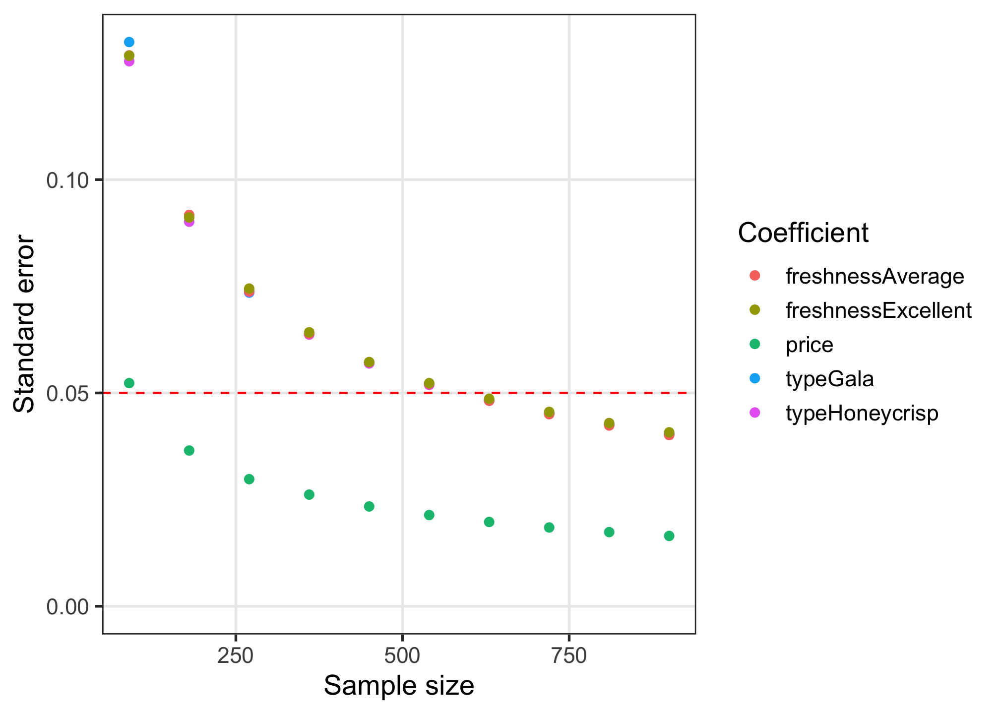

This package provides a set of tools for designing surveys and conducting power analyses for choice-based conjoint survey experiments in R. Each function in the package begins with cbc_ and supports a step in the following process for designing and analyzing surveys:

Installation
The current version is not yet on CRAN, but you can install it from Github using the {remotes} library:
# install.packages("remotes")
remotes::install_github("jhelvy/cbcTools")Load the library with:
Make survey designs
Generating profiles
The first step in designing an experiment is to define the attributes and levels for your experiment and then generate all of the profiles of each possible combination of those attributes and levels. For example, let’s say you’re designing a conjoint experiment about apples and you want to include price, type, and freshness as attributes. You can obtain all of the possible profiles for these attributes using the cbc_profiles() function:
profiles <- cbc_profiles(
price = seq(1, 4, 0.5), # $ per pound
type = c('Fuji', 'Gala', 'Honeycrisp'),
freshness = c('Poor', 'Average', 'Excellent')
)
nrow(profiles)
#> [1] 63
head(profiles)
#> profileID price type freshness
#> 1 1 1.0 Fuji Poor
#> 2 2 1.5 Fuji Poor
#> 3 3 2.0 Fuji Poor
#> 4 4 2.5 Fuji Poor
#> 5 5 3.0 Fuji Poor
#> 6 6 3.5 Fuji Poor
tail(profiles)
#> profileID price type freshness
#> 58 58 1.5 Honeycrisp Excellent
#> 59 59 2.0 Honeycrisp Excellent
#> 60 60 2.5 Honeycrisp Excellent
#> 61 61 3.0 Honeycrisp Excellent
#> 62 62 3.5 Honeycrisp Excellent
#> 63 63 4.0 Honeycrisp ExcellentDepending on the context of your survey, you may wish to eliminate or modify some profiles before designing your conjoint survey (e.g., some profile combinations may be illogical or unrealistic). WARNING: including hard constraints in your designs can substantially reduce the statistical power of your design, so use them cautiously and avoid them if possible.
If you do wish to set some levels conditional on those of other attributes, you can do so by setting each level of an attribute to a list that defines these constraints. In the example below, the type attribute has constraints such that only certain price levels will be shown for each level. In addition, for the "Honeycrisp" level, only two of the three freshness levels are included: "Excellent" and "Average". Note that both the other attributes (price and freshness) should contain all of the possible levels. When these constraints you can see that there are only 30 profiles compared to 63 without constraints:
profiles <- cbc_profiles(
price = c(1, 1.5, 2, 2.5, 3, 3.5, 4, 4.5, 5),
freshness = c('Poor', 'Average', 'Excellent'),
type = list(
"Fuji" = list(
price = c(2, 2.5, 3)
),
"Gala" = list(
price = c(1, 1.5, 2)
),
"Honeycrisp" = list(
price = c(2.5, 3, 3.5, 4, 4.5, 5),
freshness = c("Average", "Excellent")
)
)
)
nrow(profiles)
#> [1] 30
head(profiles)
#> profileID price freshness type
#> 1 1 2.0 Poor Fuji
#> 2 2 2.5 Poor Fuji
#> 3 3 3.0 Poor Fuji
#> 4 4 2.0 Average Fuji
#> 5 5 2.5 Average Fuji
#> 6 6 3.0 Average Fuji
tail(profiles)
#> profileID price freshness type
#> 25 25 2.5 Excellent Honeycrisp
#> 26 26 3.0 Excellent Honeycrisp
#> 27 27 3.5 Excellent Honeycrisp
#> 28 28 4.0 Excellent Honeycrisp
#> 29 29 4.5 Excellent Honeycrisp
#> 30 30 5.0 Excellent HoneycrispGenerating random designs
Once a set of profiles is obtained, a randomized conjoint survey can then be generated using the cbc_design() function:
design <- cbc_design(
profiles = profiles,
n_resp = 900, # Number of respondents
n_alts = 3, # Number of alternatives per question
n_q = 6 # Number of questions per respondent
)
dim(design) # View dimensions
#> [1] 16200 8
head(design) # Preview first 6 rows
#> respID qID altID obsID profileID price type freshness
#> 1 1 1 1 1 42 4.0 Honeycrisp Average
#> 2 1 1 2 1 56 4.0 Gala Excellent
#> 3 1 1 3 1 27 3.5 Fuji Average
#> 4 1 2 1 2 57 1.0 Honeycrisp Excellent
#> 5 1 2 2 2 10 2.0 Gala Poor
#> 6 1 2 3 2 37 1.5 Honeycrisp AverageFor now, the cbc_design() function only generates a randomized design. Other packages, such as the {idefix} package, are able to generate other types of designs, such as Bayesian D-efficient designs. The randomized design simply samples from the set of profiles. It also ensures that no two profiles are the same in any choice question.
The resulting design data frame includes the following columns:
-
respID: Identifies each survey respondent. -
qID: Identifies the choice question answered by the respondent. -
altID:Identifies the alternative in any one choice observation. -
obsID: Identifies each unique choice observation across all respondents. -
profileID: Identifies the profile inprofiles.
Labeled designs (a.k.a. “alternative-specific” designs)
You can also make a “labeled” design (also known as “alternative-specific” design) where the levels of one attribute is used as a label by setting the label argument to that attribute. This by definition sets the number of alternatives in each question to the number of levels in the chosen attribute, so the n_alts argument is overridden. Here is an example labeled survey using the type attribute as the label:
design_labeled <- cbc_design(
profiles = profiles,
n_resp = 900, # Number of respondents
n_alts = 3, # Number of alternatives per question
n_q = 6, # Number of questions per respondent
label = "type" # Set the "type" attribute as the label
)
dim(design_labeled)
#> [1] 16200 8
head(design_labeled)
#> respID qID altID obsID profileID price type freshness
#> 1 1 1 1 1 48 3.5 Fuji Excellent
#> 2 1 1 2 1 29 1.0 Gala Average
#> 3 1 1 3 1 39 2.5 Honeycrisp Average
#> 4 1 2 1 2 23 1.5 Fuji Average
#> 5 1 2 2 2 53 2.5 Gala Excellent
#> 6 1 2 3 2 58 1.5 Honeycrisp ExcellentIn the above example, you can see in the first six rows of the survey that the type attribute is always fixed to be the same order, ensuring that each level in the type attribute will always be shown in each choice question.
Adding a “no choice” option (a.k.a. “outside good”)
You can include a “no choice” (also known as “outside good” option in your survey by setting no_choice = TRUE. If included, all categorical attributes will be dummy-coded to appropriately dummy-code the “no choice” alternative.
design_nochoice <- cbc_design(
profiles = profiles,
n_resp = 900, # Number of respondents
n_alts = 3, # Number of alternatives per question
n_q = 6, # Number of questions per respondent
no_choice = TRUE
)
dim(design_nochoice)
#> [1] 21600 13
head(design_nochoice)
#> respID qID altID obsID profileID price type_Fuji type_Gala type_Honeycrisp
#> 1 1 1 1 1 27 3.5 1 0 0
#> 2 1 1 2 1 20 3.5 0 0 1
#> 3 1 1 3 1 12 3.0 0 1 0
#> 4 1 1 4 1 0 0.0 0 0 0
#> 5 1 2 1 2 24 2.0 1 0 0
#> 6 1 2 2 2 44 1.5 1 0 0
#> freshness_Poor freshness_Average freshness_Excellent no_choice
#> 1 0 1 0 0
#> 2 1 0 0 0
#> 3 1 0 0 0
#> 4 0 0 0 1
#> 5 0 1 0 0
#> 6 0 0 1 0Inspecting survey designs
The package includes some functions to quickly inspect some basic metrics of a design.
The cbc_balance() function prints out a summary of the counts of each level for each attribute across all choice questions as well as the two-way counts across all pairs of attributes for a given design:
cbc_balance(design)
#> ==============================
#> Attribute counts:
#>
#> price:
#>
#> 1 1.5 2 2.5 3 3.5 4
#> 2296 2294 2330 2342 2261 2278 2399
#>
#> type:
#>
#> Fuji Gala Honeycrisp
#> 5417 5430 5353
#>
#> freshness:
#>
#> Poor Average Excellent
#> 5434 5429 5337
#>
#> ==============================
#> Pairwise attribute counts:
#>
#> price & type:
#>
#> Fuji Gala Honeycrisp
#> 1 808 759 729
#> 1.5 761 767 766
#> 2 748 810 772
#> 2.5 761 761 820
#> 3 745 783 733
#> 3.5 777 757 744
#> 4 817 793 789
#>
#> price & freshness:
#>
#> Poor Average Excellent
#> 1 763 785 748
#> 1.5 746 793 755
#> 2 796 779 755
#> 2.5 812 767 763
#> 3 734 747 780
#> 3.5 770 775 733
#> 4 813 783 803
#>
#> type & freshness:
#>
#> Poor Average Excellent
#> Fuji 1826 1821 1770
#> Gala 1789 1855 1786
#> Honeycrisp 1819 1753 1781The cbc_overlap() function prints out a summary of the amount of “overlap” across attributes within the choice questions. For example, for each attribute, the count under "1" is the number of choice questions in which the same level was shown across all alternatives for that attribute (because there was only one level shown). Likewise, the count under "2" is the number of choice questions in which only two unique levels of that attribute were shown, and so on:
cbc_overlap(design)
#> ==============================
#> Counts of attribute overlap:
#> (# of questions with N unique levels)
#>
#> price:
#>
#> 1 2 3
#> 79 1892 3429
#>
#> type:
#>
#> 1 2 3
#> 544 3574 1282
#>
#> freshness:
#>
#> 1 2 3
#> 549 3561 1290Simulating choices
You can simulate choices for a given design using the cbc_choices() function. By default, random choices are simulated:
data <- cbc_choices(
design = design,
obsID = "obsID"
)
head(data)
#> respID qID altID obsID profileID price type freshness choice
#> 1 1 1 1 1 42 4.0 Honeycrisp Average 0
#> 2 1 1 2 1 56 4.0 Gala Excellent 1
#> 3 1 1 3 1 27 3.5 Fuji Average 0
#> 4 1 2 1 2 57 1.0 Honeycrisp Excellent 1
#> 5 1 2 2 2 10 2.0 Gala Poor 0
#> 6 1 2 3 2 37 1.5 Honeycrisp Average 0You can also pass a list of prior parameters to define a utility model that will be used to simulate choices. In the example below, the choices are simulated using a utility model with the following parameters:
- 1 continuous parameter for
price - 2 categorical parameters for
type('Gala'and'Honeycrisp') - 2 categorical parameters for
freshness("Average"and"Excellent")
Note that for categorical variables (type and freshness in this example), the first level defined when using cbc_profiles() is set as the reference level. The example below defines the following utility model for simulating choices for each alternative j:
[ u_j = 0.1price_j + 0.1typeGala_j + 0.2typeHoneycrisp_j + 0.1freshnessAverage_j + 0.2freshnessExcellent_j + \varepsilon_j](https://latex.codecogs.com/png.image?%5Cdpi%7B110%7D&space;%5Cbg_white&space;%0Au_j%20%3D%200.1price_j%20%2B%200.1typeGala_j%20%2B%200.2typeHoneycrisp_j%20%2B%200.1freshnessAverage_j%20%2B%200.2freshnessExcellent_j%20%2B%20%5Cvarepsilon_j%0A " u_j = 0.1price_j + 0.1typeGala_j + 0.2typeHoneycrisp_j + 0.1freshnessAverage_j + 0.2freshnessExcellent_j + _j ")
data <- cbc_choices(
design = design,
obsID = "obsID",
priors = list(
price = 0.1,
type = c(0.1, 0.2),
freshness = c(0.1, 0.2)
)
)If you wish to include a prior model with an interaction, you can do so inside the priors list. For example, here is the same example as above but with an interaction between price and type added:
data <- cbc_choices(
design = design,
obsID = "obsID",
priors = list(
price = 0.1,
type = c(0.1, 0.2),
freshness = c(0.1, 0.2),
`price*type` = c(0.1, 0.5)
)
)Finally, you can also simulate data for a mixed logit model where parameters follow a normal or log-normal distribution across the population. In the example below, the randN() function is used to specify the type attribute with 2 random normal parameters with a specified vector of means (mu) and standard deviations (sigma) for each level of type. Log-normal parameters are specified using randLN().
Conducting a power analysis
The simulated choice data can be used to conduct a power analysis by estimating the same model multiple times with incrementally increasing sample sizes. As the sample size increases, the estimated coefficient standard errors will decrease (i.e. coefficient estimates become more precise). The cbc_power() function achieves this by partitioning the choice data into multiple sizes (defined by the nbreaks argument) and then estimating a user-defined choice model on each data subset. In the example below, 10 different sample sizes are used. All models are estimated using the {logitr} package:
power <- cbc_power(
data = data,
pars = c("price", "type", "freshness"),
outcome = "choice",
obsID = "obsID",
nbreaks = 10,
n_q = 6
)
head(power)
#> sampleSize coef est se
#> 1 90 price 0.005143147 0.05230155
#> 2 90 typeGala -0.034420995 0.13224139
#> 3 90 typeHoneycrisp 0.030760930 0.12774097
#> 4 90 freshnessAverage 0.082043470 0.12911466
#> 5 90 freshnessExcellent 0.052048811 0.12903831
#> 6 180 price 0.055646337 0.03650679
tail(power)
#> sampleSize coef est se
#> 45 810 freshnessExcellent -0.066116023 0.04294321
#> 46 900 price 0.054298690 0.01649641
#> 47 900 typeGala -0.020000504 0.04034574
#> 48 900 typeHoneycrisp -0.021436584 0.04039965
#> 49 900 freshnessAverage -0.000641108 0.04011179
#> 50 900 freshnessExcellent -0.056331796 0.04077737The power data frame contains the coefficient estimates and standard errors for each sample size. You can quickly visualize the outcome to identify a required sample size for a desired level of parameter precision by using the plot() method:
plot(power)
If you want to examine any other aspects of the models other than the standard errors, you can set return_models = TRUE and cbc_power() will return a list of estimated models. The example below prints a summary of the last model in the list of models:
library(logitr)
models <- cbc_power(
data = data,
pars = c("price", "type", "freshness"),
outcome = "choice",
obsID = "obsID",
nbreaks = 10,
n_q = 6,
return_models = TRUE
)
summary(models[[10]])
#> =================================================
#> Call:
#> FUN(data = X[[i]], outcome = ..1, obsID = ..2, pars = ..3, randPars = ..4,
#> panelID = ..5, clusterID = ..6, robust = ..7, predict = ..8)
#>
#> Frequencies of alternatives:
#> 1 2 3
#> 0.33296 0.34056 0.32648
#>
#> Exit Status: 3, Optimization stopped because ftol_rel or ftol_abs was reached.
#>
#> Model Type: Multinomial Logit
#> Model Space: Preference
#> Model Run: 1 of 1
#> Iterations: 8
#> Elapsed Time: 0h:0m:0.02s
#> Algorithm: NLOPT_LD_LBFGS
#> Weights Used?: FALSE
#> Robust? FALSE
#>
#> Model Coefficients:
#> Estimate Std. Error z-value Pr(>|z|)
#> price 0.05429869 0.01649641 3.2915 0.0009964 ***
#> typeGala -0.02000050 0.04034574 -0.4957 0.6200865
#> typeHoneycrisp -0.02143658 0.04039965 -0.5306 0.5956869
#> freshnessAverage -0.00064111 0.04011179 -0.0160 0.9872479
#> freshnessExcellent -0.05633180 0.04077737 -1.3814 0.1671414
#> ---
#> Signif. codes: 0 '***' 0.001 '**' 0.01 '*' 0.05 '.' 0.1 ' ' 1
#>
#> Log-Likelihood: -5.925669e+03
#> Null Log-Likelihood: -5.932506e+03
#> AIC: 1.186134e+04
#> BIC: 1.189431e+04
#> McFadden R2: 1.152481e-03
#> Adj McFadden R2: 3.096665e-04
#> Number of Observations: 5.400000e+03Piping it all together!
One of the convenient features of how the package is written is that the object generated in each step is used as the first argument to the function for the next step. Thus, just like in the overall program diagram, the functions can be piped together:
cbc_profiles(
price = seq(1, 4, 0.5), # $ per pound
type = c('Fuji', 'Gala', 'Honeycrisp'),
freshness = c('Poor', 'Average', 'Excellent')
) |>
cbc_design(
n_resp = 900, # Number of respondents
n_alts = 3, # Number of alternatives per question
n_q = 6 # Number of questions per respondent
) |>
cbc_choices(
obsID = "obsID",
priors = list(
price = 0.1,
type = c(0.1, 0.2),
freshness = c(0.1, 0.2)
)
) |>
cbc_power(
pars = c("price", "type", "freshness"),
outcome = "choice",
obsID = "obsID",
nbreaks = 10,
n_q = 6
) |>
plot()
Author, Version, and License Information
- Author: John Paul Helveston https://www.jhelvy.com/
- Date First Written: October 23, 2020
- License: MIT
Citation Information
If you use this package for in a publication, I would greatly appreciate it if you cited it - you can get the citation by typing citation("cbcTools") into R:
citation("cbcTools")
#>
#> To cite cbcTools in publications use:
#>
#> John Paul Helveston (2022). cbcTools: Tools For Designing Conjoint
#> Survey Experiments.
#>
#> A BibTeX entry for LaTeX users is
#>
#> @Manual{,
#> title = {cbcTools: Tools For Designing Choice-Based Conjoint Survey Experiments},
#> author = {John Paul Helveston},
#> year = {2022},
#> note = {R package version 0.0.2},
#> url = {https://jhelvy.github.io/cbcTools/},
#> }